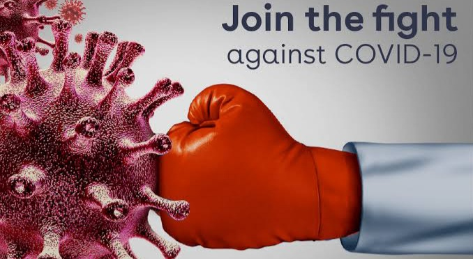
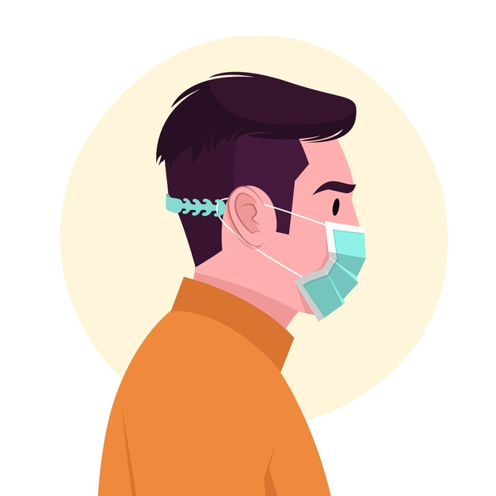
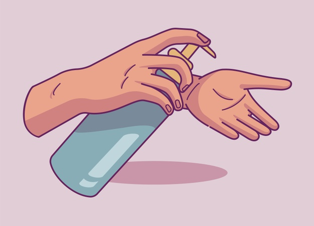
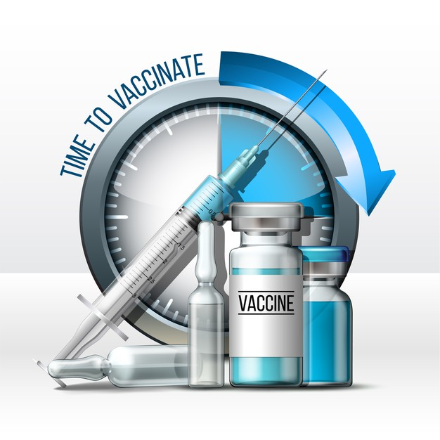
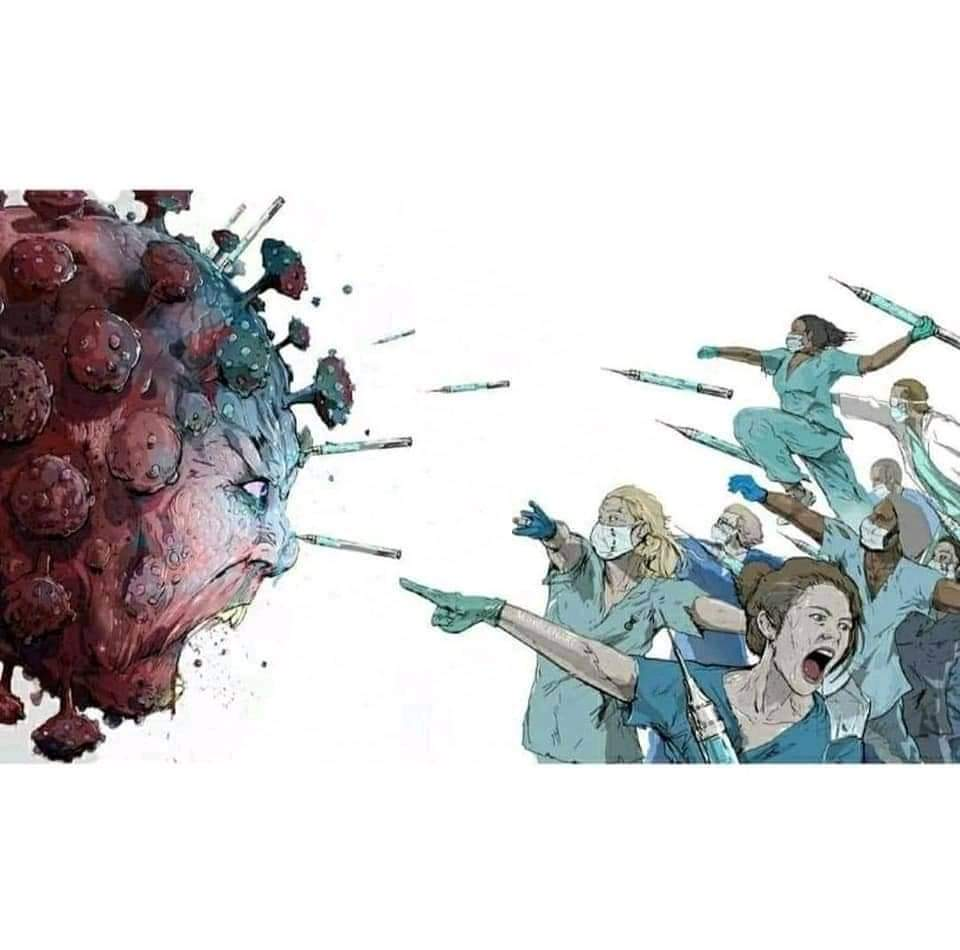

The coronavirus pandemic is upending life on a global level as we know it. Needless to say, doctors, nurses and people working in health-care sectors are particularly vulnerable to the highly infectious disease. In response to the global pandemic, the under-resourced doctors are facing unprecedented challenges. Thanks for them who are acting as the shadow of god ,rescuing the hundreds and thousands of people life ,keeping their life in high risk.
Polices
The COVID-19 pandemic has created a range of unforeseen and unprecedented challenges for police departments worldwide.The ongoing COVID-19 pandemic has infected and killed several hundred thousands of police worldwide. Thank them for their obedience and fearlessness to fight this pandemic.
ASHA Workers
At the heart of the COVID19 pandemic is the relentless effort of hundreds of frontline health workers. In rural India, this battle against the pandemic is being led by an army of women health workers - the Accredited Social Health Activists (ASHA) and Auxiliary Nurse Midwives (ANM) or frontline health workers. Thanking them for their extraordinary effort in this pandemic situation.
Basic guidelines to follow


Wear Masks

Frequently Sanitise your hands
Socially Distance Yourselves

Get vaccinated ASAP
Few images that Depicts their efforts

Frequently Asked
Questions
Get Every Single Answers
There if you want
The test for coronavirus does not involve any blood examination. Coronavirus test includes examining of the throat swab or the nasal swab to check for infection. After taking samples, doctors posted at nodal hospitals may assess your physical health to decide whether hospitalisation is needed. Otherwise, you may be asked to stay isolated at home itself. If the tests are positive, you may require to remain quarantined for at least 14 days, till recovery.
Call Union health ministry's 24X7 helpline number: 01123978046. You can also mail your queries at ncov2019@gmail.com. The district surveillance officer will visit you shortly and, if chances of infection are high, you may be transported to a designated hospital for the test. Govt has placed separate ambulances for transporting suspected cases. Use of public transport isn't advised.
It's not known. A few reports from China say some people had COVID-19, recovered and then fell ill again. It's unclear if that's a relapse, a new infection, or a case where the person never fully recovered in the first place. Scientists at the Fred Hutchinson Cancer Research Center in Seattle say the 30,000-letter genetic code of the virus changes by one letter every 15 days. It's not known how many of these changes would be needed for the virus to seem different enough to the immune system of someone who had a previous version of it for it to cause a fresh infection.
Experts say the effects appear to depend on how robust or weakened a person's immune system is. The WHO and the Centre for Disease Control (CDC) have said that the two major groups of people who are more likely to be affected by the disease are the elderly and those with underlying medical conditions. People who have aged and have weak immune systems have a harder time fighting off the COVID-19 infection. People who already have an underlying health condition like heart disease, diabetes or lung disease are more prone to the infection causing severe symptoms. People with these underlying problems have a taxed immune system and cannot fight off the infection. However, you need to take the necessary precautions even if you are young and healthy.
These measures are not effective against COVID-2019 and can be harmful: Smoking, Wearing multiple masks, Taking antibiotics. In any case, if you have fever, cough and difficulty breathing seek medical care early to reduce the risk of developing a more severe infection and be sure to share your recent travel history with your health care provider.
The contribution of nurses is important behind today's recovery rate. You are the embodiment of motherhood, that's why you always protect us from any type of diseases.
We are also corona warriors...
We also do our duty daily..
We are traveling all the cities,villages for you..
Then why not we have the priority to be vaccinated first ??


{kind=link}
{kind=link}
{kind=link}